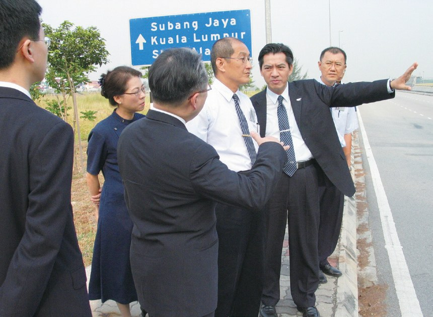
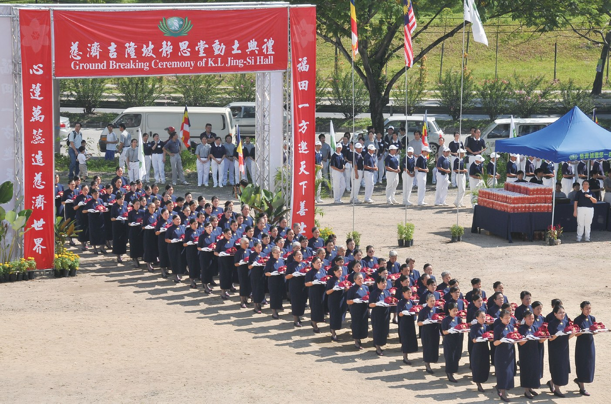
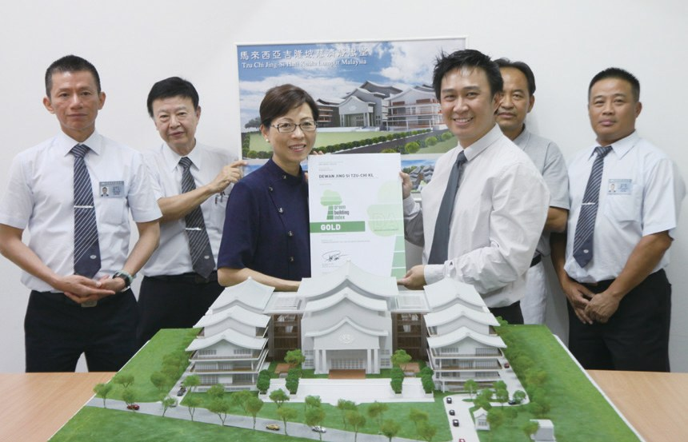
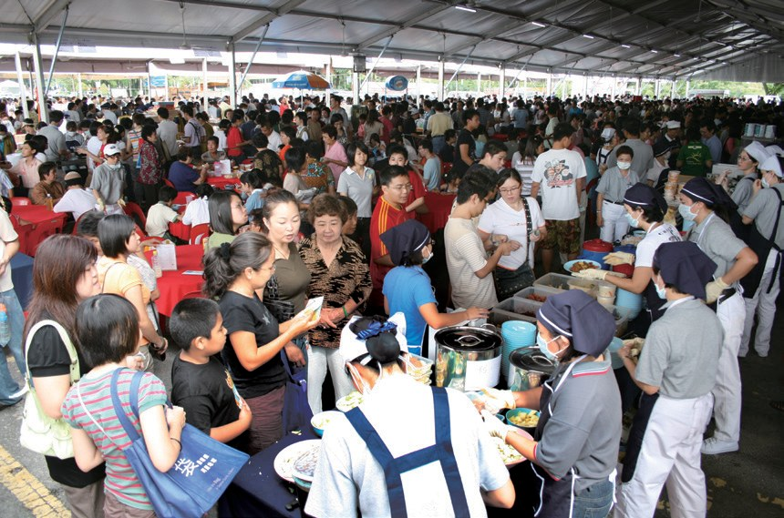
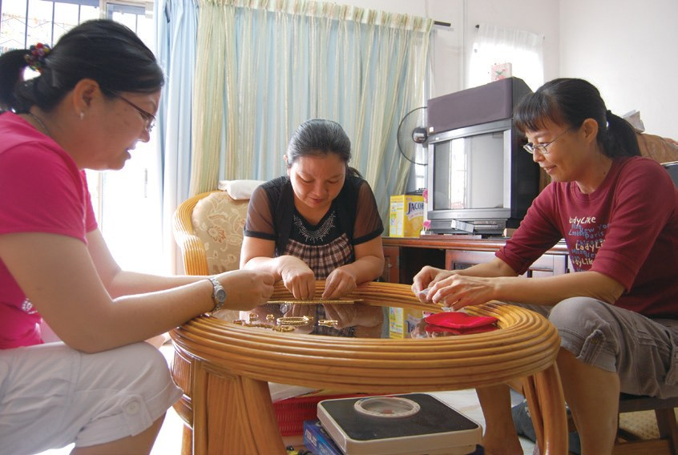
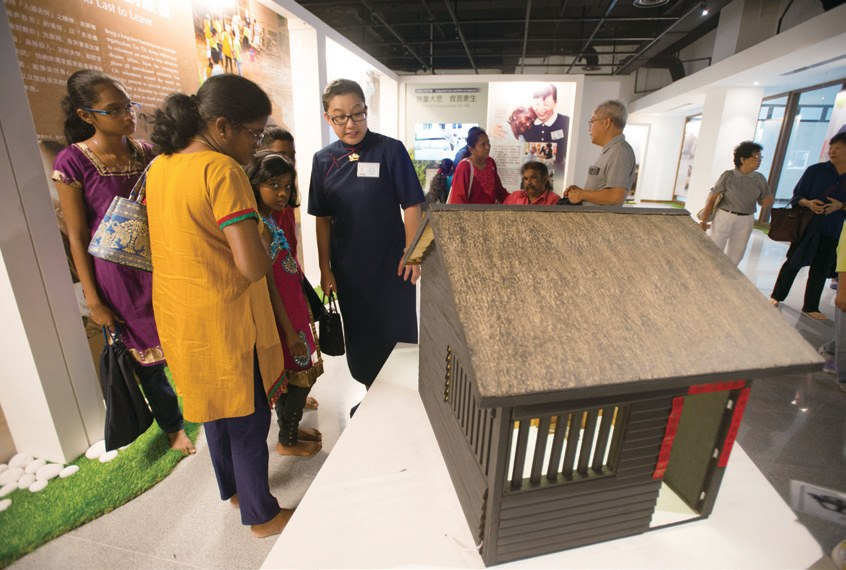
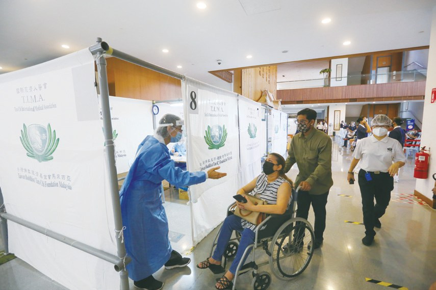
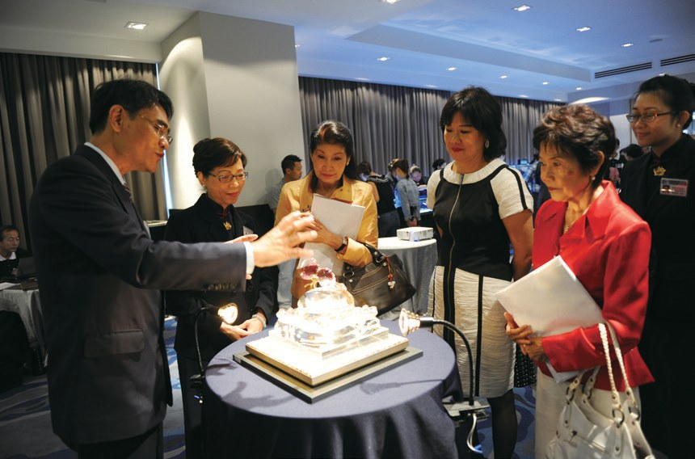

靜思道場
無聲說法
一座房子，怎樣「無聲說法」？

先別急著下結論，讀完再說說你的想法～
這一篇講吉隆坡靜思堂：從1998年開始找地，到2014年啟用，成為雪隆慈濟人的「家」。
你會讀到會呼吸的地面、以宇宙為背景的講經堂、志工變賣的金飾，還有疫情時，靜思堂變成疫苗接種中心。
下面是原書的節錄，紅色底線是我們替你標出的轉折點。
讀之前：你覺得蓋一座靜思堂，最需要的是什麼？
找了八年的地
1998年開始籌劃，一直找不到土地。閱讀引導
「興建靜思堂是為展現佛陀教育，匯聚佛教慧命，也是為佛教建立一座永久的精神堡壘，……」
上人說・p.5791998年，吉隆坡慈濟人開始籌劃興建靜思堂，但一直未尋獲適合的土地，直到2006年，經志工林孝式（惟京）協助，才終於找到一塊位在甲洞，適合興建靜思堂的用地。

找了這麼久！

在慈濟人與吉隆坡市政府積極溝通下，多次調整靜思堂設計、規劃等等，經過三年的努力，終於取得土地開發許可。
……結構依上人理念，以中國傳統三合院為設計概念，中央主建築為象徵「靜思法脈」的講經堂……

朝向宇宙禮佛
沒有柏油路，屋頂有太陽能板。閱讀引導
園區內沒有柏油路，而是鋪設連鎖磚，讓大地擁有呼吸的空間；並設置雨水、污水回收過濾系統，珍惜水資源。
都會呼吸！
2013年，靜思堂的設計榮獲馬來西亞綠建築委員會所頒發的綠建築金獎。

……講經堂的設計參考臺灣花蓮靜思精舍主堂，以太陽系星球運行作為佛龕背景，讓大眾禮佛時朝向宇宙禮拜，心境無限開闊。

禮佛！
「……所以我們要用虔誠的心，向著開闊無垠的宇宙禮佛，不必執著佛像一定要多麼高大，真正的佛就存在我們的心裡。」
上人表示・p.583金飾化成磚牆
素食便當、義剪、百衲被、金鏈子。閱讀引導
猜一猜閱讀引導
吉隆坡靜思堂的建設資金，有多少是來自志工、會員或民眾的點滴護持？

許多顧客得知義賣消息後，特地多買了幾份飯菜，或是以不找零的方式捐款……
「因義賣，有志工來幫忙，菜商也免費提供青菜，大家都努力耕耘這一畝福田，我往後還要更努力地為靜思堂募款。」
葉建成表示・p.5862010年，住在雙溪毛糯痲瘋病院的林梅影，在志工李桂英的接引下，製作百衲被，以訂單的形式義賣，為吉隆坡靜思堂募款……

也來縫被子。
志工戴雅蓮記起家裡還有幾條金鏈、幾枚金戒指，當下決定把這些身外物捐出來。

……在她窮到沒錢買菜，用白開水配飯的日子，都沒有想過要變賣金飾；這次為了援助興建靜思堂，鄧順明只留下一對珍珠耳環作紀念。
這次卻賣了？
「上人說首飾珠寶放著沒用到，就像破銅爛鐵一般；靜思堂是慈濟淨化人心的道場，是慈濟人心靈的故鄉，捐助建築費，將金飾化為智慧的磚牆，何樂不為呢？」
鄧順明說・p.5872013年，一件名叫「福到人間」的珠寶來到吉隆坡，為靜思堂籌建築費。
「……我不擔心錢捐了會變窮，捨得捨得，有捨才有得。……」
劉玉英說・p.588有一次大火燒毀了饒雪梅的家園，除了慈濟提供急難救助金外，也由於平時結了許多善緣，不少善心人士也捐助饒雪梅部分生活用品。
她會怎麼做？
饒雪梅感受到人間的溫暖，她毅然地把250令吉捐出，得知靜思堂籌募建設基金後，還集合全家人的愛心，共同樂捐一百多令吉，期望能讓這分溫暖，發揮更大的意義。
再送出去。
- 124位實業家參與p.589
- 兩百多萬令吉募集的建設基金p.589
靜思堂變成疫苗接種中心
2014年啟用，成為大家的「家」。閱讀引導
2014年吉隆坡靜思堂啟用，設置社教中心與大愛幼兒園……

2018年5月，配合三節合一正式對外開放參訪，同年7月辦理導覽志工培訓課程，讓導覽志工以舊法新知提升自己，為到訪者講解展覽館的陳設及背後的故事，知行合一，以生命來感動生命。
「我從來沒有去過馬來西亞，他們離我那麼遙遠，但是他們敬師如師在。……」
上人讚歎・p.590
心卻很近。
慈濟是馬來西亞第一個參與衛生部「全國冠病免疫計畫（PICK）」的非營利組織……
疫苗接種中心在6月11日測試運作，6月19日正式運作至9月底，預計每天可為六百人完成接種疫苗。
在靜思堂打疫苗！

此外，每天動員五十位志工承擔後勤人員……
「靜思堂的氛圍很好，從入場到每一站的運作都非常流暢，讓接種者不會感到絲毫的壓力，志工很親切友善，真正達到衛生部的期待。」
副衛生總監張志強醫師讚許・p.592「疫情是大自然給人類無形的教育，唯有凝聚善念才能止災息厄。……」
上人慈示・p.592停一停：誰讓你記住了？閱讀引導
選一位你印象最深的人。沒有標準答案。
有人帶病縫百衲被，有人窮時不賣的金飾這次捐了，有人說有捨才有得，有人家被火燒了還捐款。哪一位讓你最有感覺？

一起回頭看看吧～
回望
依本章原文整理，每一條都標了原書頁碼。閱讀引導
背後原因
為什麼要建靜思堂

小川租場地也能辦活動，為什麼要建靜思堂？
- 精神堡壘
為佛教建立一座永久的精神堡壘。p.579
- 無聲說法
外觀與內部皆以「無聲說法」為設計理念。p.579
- 接引會眾
讓空間發揮良能，成為接引會眾的靜思道場。p.589
後續發展
靜思堂一路走來

小禾從開始找地到疫苗接種中心，經過了多少年？
- 1998
開始籌劃興建靜思堂。p.579
- 2006
在甲洞找到合適用地。p.579
- 2010
靜思堂動土。p.581
- 2013
榮獲綠建築金獎。p.582
- 2014
吉隆坡靜思堂啟用。p.589
- 2021.6
設立疫苗接種中心。p.591
一點一滴
人人都能護持
小禾大家用了哪些方法護持靜思堂？
- 第一圈素食便當
連續五年，每月初一、十五義賣。p.583–584

第二圈義剪理髮店一日義剪，籌得3,000令吉。p.586
- 第三圈金飾
志工變賣金飾，作為建設基金。p.586–587
以上只整理本章寫到的事；書裡沒寫到的，我們不替它下結論。
回頭看讀前的選擇閱讀引導
建設資金有六成來自志工、會員和民眾的點滴護持（p.583）；鄧順明說要將金飾化為智慧的磚牆（p.587）；上人說真正的佛就存在我們的心裡（p.583）。錢和設計都重要，最先要有大家的心。
饒雪梅阿嬤為什麼還要捐款？
只有你自己看得到喔！
準備好了就一起出發～